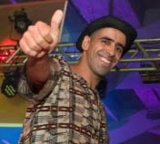
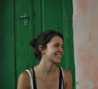
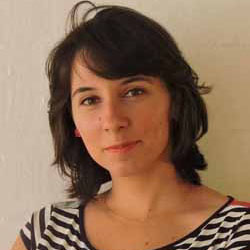
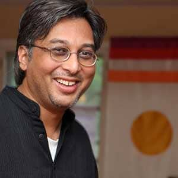
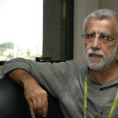
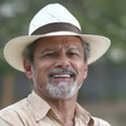
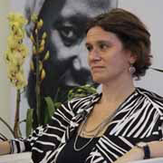
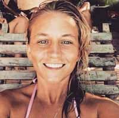
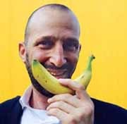
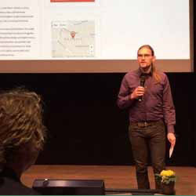

Philippe Greier
Philippe is founder of the NGO presente! and initiator of several successful prototypes and solutions for transforming education in a collaborative ways. A professional hippie who envisions a future built upon tolerance and conscious choices. What triggers him is discovering and experimenting new realities and ways to live together and to collaborate in save and abundant communities.


Thais Avelino
Graduated in Information Systems and passionate about education. Was director of educational projects at Ganbatte (social impact startup). Tied in the area of technology, in multinational and startups, also collaborating with projects of educational technology. Now is studying AI programming at Ecole 42, an innovative educational project without teachers based on self-managed and peer-2-peer learning.

Marcelo Shama
Network Articulatiomns, Creative Ideas and Solutions, facility to work with staff and uplifiting the spirit of motivation and co-creation, experience in areas related to sustainability, education, culture, indigenous peoples and permaculture; leadership skills; easy adaptation to the working environment and staff.

Camila Batista
Passionate about social change, have been working with slums and marginalized areas since youth, developing several projects for local empowerment and social inclusion. Background in Law with studies focused in Human Rights, conflict mediation and development cooperation. Is always engaged in co-creating ideas and actions to articulate the causes that I defend. Therefore among them she have experience working in a global organization focused on digital empowerment field, ahead of the strategy of implementation of regional projects and expansion of a global network present in seven countries. Member and young representative of Brazil at the 7th Global Forum of the United Nations Alliance of Civilizations (UNAOC); Is engaged as an activist for women's rights, having previous experience acting as assistant to one of the experts of the UN Committee on the Elimination of Discrimination Against Women (CEDAW); Also engaged in mentoring for social young entrepreneurs, and education.

Tathyana Gouvêa
Tathyana is an educator and entrepreneur. She received a Master in School Management and a PhD in Educational Innovation. She is also a founder of Projeto Educação, a research and consulting company for transformative education projects in Brazil.

Manish Jain
Manish is Co-Founder of Shikshantar: The Peoples Institute for Rethinking Education and Development and of the Swaraj University, Creativity Adda, Learning Societies Unconference, Walkouts-Walkon network, and Udaipur as a Learning City in India. linkedin: https://www.facebook.com/profile.php?id=752470568

Yaacov Hecht
Yaacov is an internationally distinguished leader and visionary in democratic education, learning theory, and societal change. In 2005, "The Marker"—Israel's largest economic magazine—named Hecht one of the 10 most influential people in the social and educational areas in Israel.

Adebayo Akomolafe
Bayo is a clinical psychologist, lecturer and author from Covenant University in Nigeria. He is an international speaker, poet and activist for a radical paradigm shift in consciousness and current ways of living.
Ku Kahakalau
Kū is a native Hawaiian educator, researcher, song-writer, and expert in Hawaiian language, history and culture. After decades of creating and testing Hawaiian-focused models of education, Kū is creating a Hawaiian system of education that is culturally-driven, family-oriented, place-based and sustainable.

José Pacheco
José is a Portuguese educator who pioneered a school called Escola da Ponte (Bridge School), in Vila das Aves, Portugal.

Tião Rocha
Tião Rocha is a Brazilian educator, anthropologist and folklorist. Tião is Founder and President of the Popular Center for Culture and Development (CPCD).
Thomas Heide
Heide is a Danish philosopher (BA), educational philosopher (MA), author, designer of philosophical objects and educational entrepreneur.

Helena Singer
Helena is National Director of Strategic Actions and Innovation of the SESC. As Special Adviser in the Ministry of Education she chaired the Initiative for Innovation and Creativity in Basic Education.
Gerald Huether
Gerald is Professor of Neurobiology and Head of the Center for Neurobiological Prevention Research at the University of Göttingen - (Psychiatric Clinic) and the Institute of Public Health (University of Mannheim).

Flor Dillon
Flor is from the University Viva Inkiri and is a part of the community in Piracanga - an intentional community in Brazil.
Floris Koot
Floris is one of the co-founders of Knowmads, a young alternative start up education focussing on educating Change Makers.

Galorian
The author with the Banana Smile. Galorian is an English author, speaker, and international advisor on creative education to government, non-profits, education, and arts bodies.
Flávio Bassi
For the past years, Flavio has worked for Ashoka in Brazil and currently leads Ashoka Education Program in South America.

Philipp Mäntele
Philipp is the co-founder of the Social Innovation Academy. He is passionate about Social Entrepreneurship and after being trained as an electrical engineer he decided to take on a Master study in vocational education and design.
Therezita Pagani
Therezita is a charismatic educator and creator of the school Te-Arte. The Te-Arte has been around since 1975 and is distinguished by not having a classroom and by its playful and artistic method. It is located in São Paulo (Brazil) and it serves 80 children and their families.
Axinia Samoilova
Axinia is currently founding an alternative school with the purpose of uniting and imbibing the world's best learning practices in order to set up an inspiring exemplar of enlightened schooling.